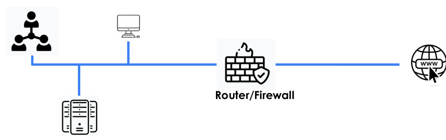
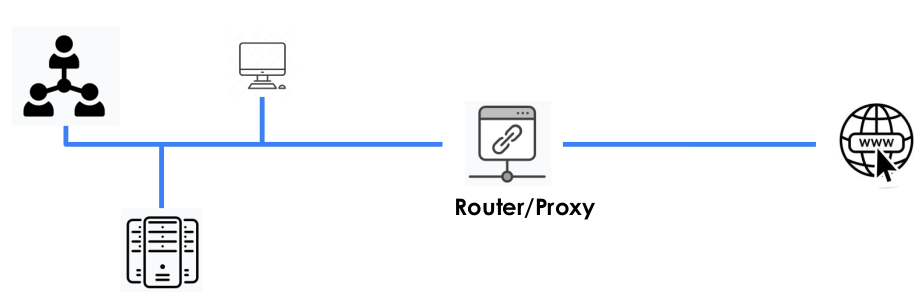
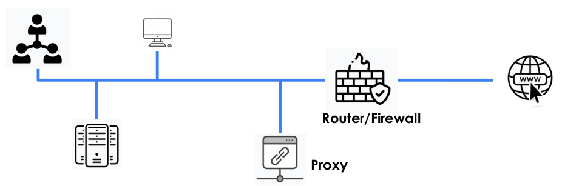
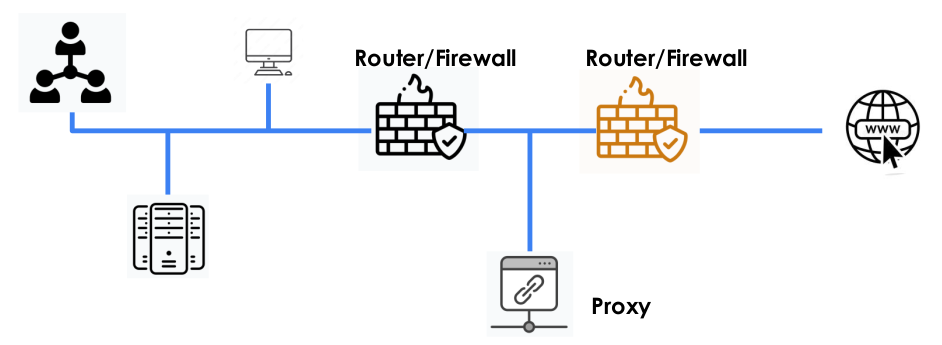
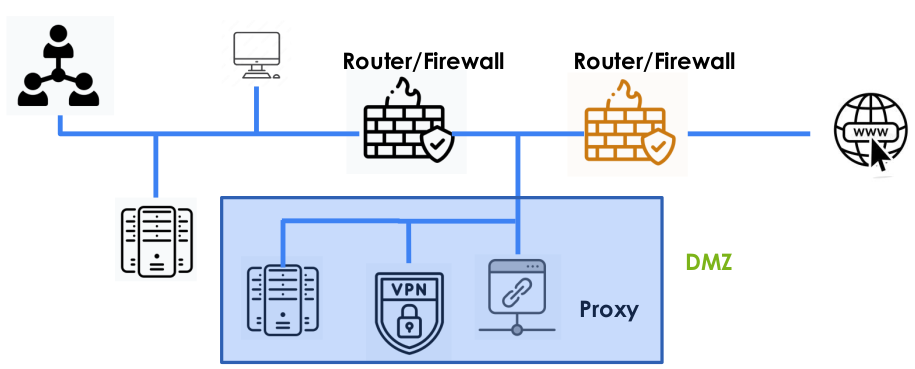

2. Elementos de arquitectura segura

1. Elementos de arquitectura segura
1.1 Firewall
- Tipos: Stateless, statefull, DPI, NGFW.
- Reglas: Basados en TCP/IP de los datos recogidos en capa 3 y 4 del modelo OSI: IP, protocolo, puerto, flags.
- Complementar la seguridad con el firewall local de los equipos.
- Segmentación de las tareas de administración.
- Mantener el software actualizado. Equipos prioritarios.
- Segmentación de acceso para los administradores.
- Activación del doble factor de autenticación.
- Realización de auditorías de seguridad sobre el firewall.
1.2 Router
Los routers son dispositivos de capa 3 (red) del modelo OSI y el uso fundamental es para interconectar redes con posibilidad de aplicar ACL.
Como buenas prácticas habría que:
- Deshabilitar servicios no utilizados: BOOTP, CDP, FTP, TFTP, HTTP, DNS, ...
- Utilizar las versiones seguras de los protocolos como por ejemplo SNMP v3 o HTTPS.
- El acceso remoto a los sistema debe ser con mínimo privilegio.
- Sólo permitir protocolos seguros de conexión remota como SSH2
- Restringir el acceso de administración para determinados IP/equipos.
- Activar la auditoría (loggin).
- Establecer un tiempo de inactividad y de sesión.
- Habilitar los protocolos de enrutamiento utilizados.
1.3 Router/proxy

Un proxy es un dispositivo intermedio que permite analizar el tráfico que atraviesa el dispositivo.
El servicio de proxy permite tener una política de conexiones y activar la vigilancia del dispositivo para enviar al SOC.
Proporcionan control, anonimización y vigilancia de las conexiones además de posibilitar la actualización de las reglas en base a las listas de IOCs.
1.4 Proxy-Router-Firewall
|  |  |
{kind=link}
{kind=link}
1.5 DMZ
La DMZ es la capa red con los servicios expuestos al exterior. Está separada del resto de red corporativa porque es la parte de nuestra red más expuesta a Internet.
Es necesario establecer reglas que controlen los flujos de información de la DMZ a la red interna.
Se implementa con 2 firewall con limitación en la comunicación entre los dos firewalls.
Hay que establecer medidas de seguridad implementadas en la DMZ.
Existen Firewalls de diferente fabricante, software, configuración, administradores de seguridad, etc.
Los servicios comunes son: proxy, IDS, VPN, DNS, web, ficheros (SFTP, SSH,...).

Obra publicada con Licencia Creative Commons Reconocimiento No comercial Compartir igual 4.0